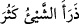
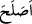

her şeyden sıyrılarak O’nun müşâhedesine intikal etmek, vasıl olmaktır. Burada şu
hususa işâret edilmektedir ki kulun Allah’ın tevfik ve irşadı olmaksızın Allah’ın
hoşnutluk ve rızasını elde edecek amel yapması mümkün değildir.
“Benim için ve zürriyetim için de salâhı devam ettir” yâni benden gelecek olanları
da iyi insanlar yap. “
” yâni “bir şey çok oldu” demektir. İnsan ve cinlerin
nesli için zürriyet denmesi bu kabildendir. Kamûs’ta böyledir. Yâni salah ve iyilik
zürriyetimde devam edip onlarda yerleşsin. Bunun için “
” fiili “ ” harf-i cerri ile
kullanılmıştır. Yoksa bu fiil harf-i cersiz de müteaddî olur. Allah Teâlânın “Biz
Zekeriyâ (a.s.)’ın eşini de kendisi için ıslah ettik.” (el-Enbiya, 21/90) kavli buna
örnektir.
Sehl şöyle demiştir: “Ya Rabbi onları bana sâdık halef, sana da gerçek kullar yap.”
Muhammed b. Ali şöyle demiştir: “Şeytan, nefis ve hevâ için onların üzerine yol
açma.” Burada babaların sâlih oluşunun oğul ve evladların da sâlih oluşunu
gerektirdiğine işâret edilmektedir.
Kâşifî şöyle demiştir: Müfessirlerin çoğu bu âyetin Hz. Ebûbekir Sıddîk (r.a.)’a has
olduğunu düşünmektedirler. Çünkü o altı ay anne karnında kalmış, iki yıl süt emmiş, on
sekiz yıl Hz. Peygamber (s.a.)’in yanında bulunmuştur ki o zaman Hz. Peygamber yirmi
yaşındaydı. Gerek seferde, gerekse hazarda arkadaşıydı ve onun yakınındaydı. Hz.
Risâlet-penâh (s.a.)’in mübarek yaşı kırka ulaştığında peygamber oldu. Sıddîk (r.a.)
otuz sekiz yaşındaydı ve ona îmân etti. Kırk yaşına geldiğinde ayette geçen duâyı yaptı.
Allah Teâlâ onun duâsını kabul etti ve o müminlerden müşrikler tarafından işkenceye
maruz kalan dokuz kişiyi âzâd etmiştir. Bunlardan biri de Bilal b. Rabah Habeşî’dir.
Bilâl Habeşî bin Ribâh bir köle idi ve doğumu Benî Müzehhec’te olmuştu. Âmir bin
Füheyre’nin doğumu ise Ezd Kabîlesi’nde olmuştu. Kızı Âişe (r.a.), Eşref-i Rusül
(s.a.)’in eşi olma şerefini elde etti. Oğlu Abdurrahmân Müslüman oldu, yine
Abdurrahmân’ın oğlu Ebû Atîk Muhammed de Müslüman oldu ve Hz. Peygamber
(s.a.)’e hizmet etme şerefiyle üstünlük buldu. Yine Hz. Sıddîk (r.a.)’ın soyundan
dünyaya gelenlerin çoğu ilim ve salâh ile müşerref oldular.
Hz. Ebû Bekir (r.a.) hayır namına neyi arzu ettiyse Allah ona o konuda yardım
etmiştir. Bütün evladları îmân etmişlerdir. Babası Ebû Kuhafe Osman b. Amir b. Ka’b
b. Sa’d b. Teym, annesi Ümmü’l- hayr Selma binti Sahr b. Amr b. Ka’b b. Sa’d,
Rasululah (s.a.)’e yetişmişler ve îmân etmişlerdir. Bu şeref ashâb-ı kiram’dan başkasına
nasip olmamıştır.
“Ben sana yüz tuttum ve ben” senin hoşnud olmayacağın yahut seni zikretmekten beni
meşgul edecek şeylerden sana karşı ihlâslı ve samimî olarak “(sana) teslîm
olanlardanım.”